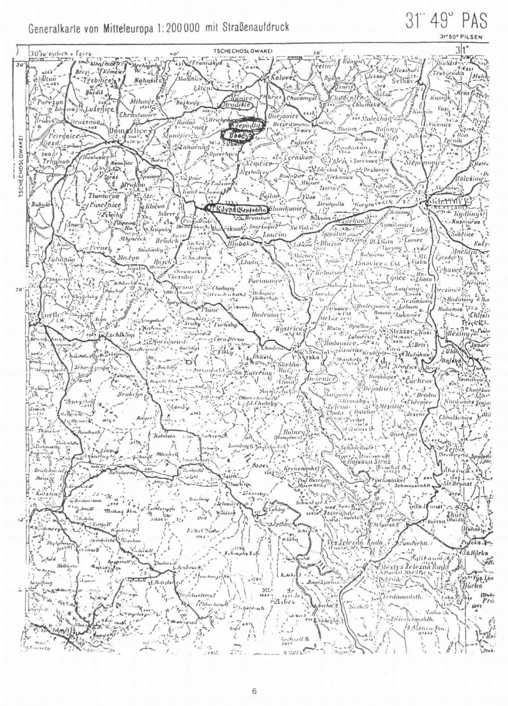

The book · A Brief History of Czechoslovakia (Bohemia/Moravia)
Page 6 Map


Transcription
![Full-page reproduction of a sheet of the German 'Generalkarte von Mitteleuropa 1:200 000 mit Strassenaufdruck' (sheet heading '31° 49° PAS', '31°50° PILSEN'; border labelled TSCHECHOSLOWAKEI). Shows the Domazlice-Kdyne-Klatovy region of southwest Bohemia down to the Bavarian border (Furth i. W., Kotzting, Eisenstein/Zelezna Ruda). Several villages are circled by hand in ink, most heavily Vsepadly ('Vsepadly' printed as 'Všepadly') and Uboc (Úboč), and Kdyne (Neugedein); lighter ovals around Hradiste (Hrádiště, north of Vsepadly), Trnci, Prapořiště, Desenice, and a box around Klatovy.](../../media/photos/s008-ph1.jpg)
Transcriber’s notes
Map page with no running text apart from the printed map sheet heading: 'Generalkarte von Mitteleuropa 1:200000 mit Straßenaufdruck' and '31° 49° PAS / 31°50° PILSEN'. Map labels are tiny and blurred; place-name readings in the description are best effort. OCR is noise.
Library stamps and handwriting (not part of the book)
- Hand-drawn ink circles/ovals on the map marking ancestral villages (Vsepadly, Uboc, Kdyne/Neugedein, Hradiste, Trnci, Klatovy and others); these appear to be part of the reproduced page rather than later library marks.